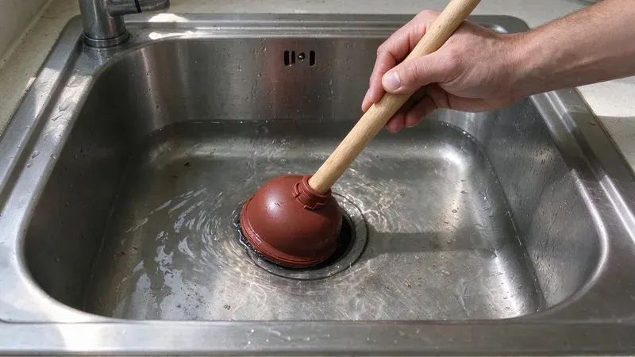
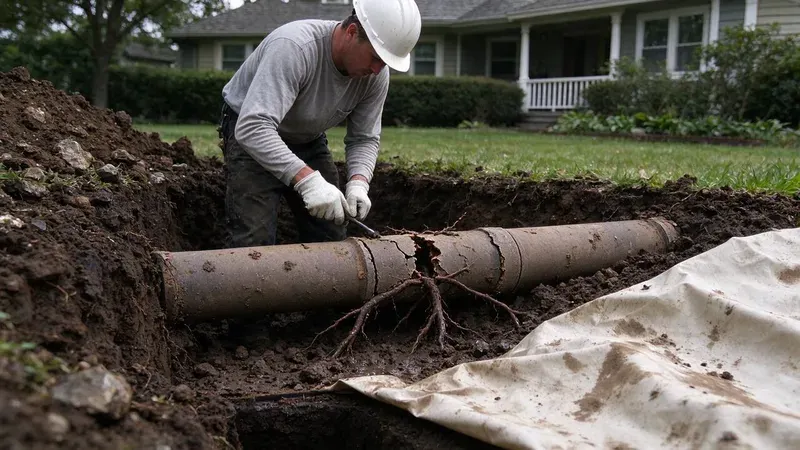
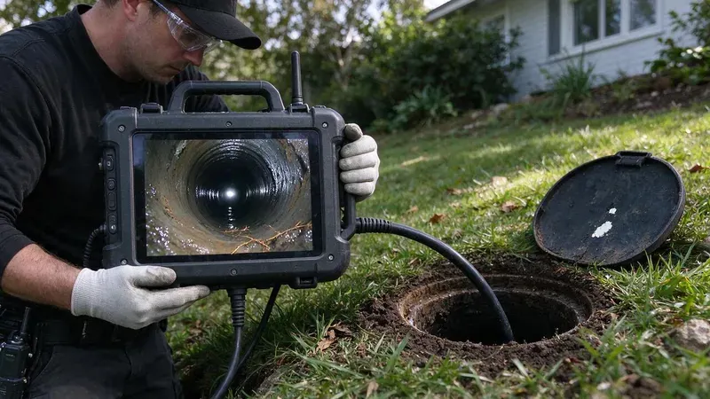

Plumbing Tips & Updates From CHV Plumbing
 15Oct, 2026
15Oct, 2026Slab Leak Warning Signs Every Michigan Homeowner Should Know
A slab leak rarely announces itself. Here is what to watch for in a Michigan home before the foundation pays for it.
 6Oct, 2026
6Oct, 2026How to Protect Your Pipes Before the Next Michigan Freeze
A burst line in a wall can dump hundreds of gallons overnight. Here is how to keep a Michigan home from freezing up.
 27Sep, 2026
27Sep, 2026Hard Water in Michigan: When a Water Softener Pays for Itself
Scale costs money in ways most people never add up. Here is when a softener is worth buying.
 18Sep, 2026
18Sep, 2026Tankless vs. Tank Water Heaters: What Works Best in Michigan
Groundwater temperature, garage conditions and scale change the tankless versus tank decision. Here is how to think it through for a Michigan home.

9Sep, 2026Kitchen Sink Backups: Causes, Prevention and Quick Solutions
Grease and coffee grounds team up with hard water scale inside kitchen drains. Here is how to clear a backup and keep the next one away.

31Aug, 2026Underground Pipe Damage: Common Causes and Modern Repair Solutions
Buried pipe fails out of sight. Here is what damages underground lines in Michigan and how modern repairs work.
 22Aug, 2026
22Aug, 2026Hydro Jetting vs. Snaking: Which Drain Cleaning Method Do You Need?
The right drain cleaning method depends on the clog. Here is when a snake is enough and when jetting makes more sense.

13Aug, 2026Why a Sewer Camera Inspection Belongs on Every Michigan Home Inspection
Most home inspections never look past the visible drains. Here is why a sewer camera belongs on the list in Michigan.
Have a plumbing question we did not cover?
Our team is happy to talk it through and give you a straight answer.